The Grammar Inspector
Grammar analysis is shown in the Grammar tab of the inspector, which contains all grammar analysis results from your active document. The tab is broken up into seven facets. Most of these facets are concerned with grammatical features of the word or sentence you selected; two are concerned with the entire document. Use this tab to inspect your passage’s structure before proceeding with counting, querying, or coding.
Everything shown in this tab derives from LemmaLoom’s automatic grammar analysis during indexing of your document (see Chapter 21, Analysis and Indexing). The grammar analysis does occasionally contain errors, especially when analyzing transcripts of speech. When in doubt, it’s best to consult the actual passage itself.
Key terms
Facets use the following terminology from the grammar analysis:
- Token refers to the unit of grammar analysis; hence couldn’t becomes two tokens, namely could and n’t, and the period at the end of a sentence is a token of its own. Tokens can refer to both words and punctuation.
- Each word has a dictionary form known as a lemma. For example, leaders has the lemma leader, and was the lemma be.
- The part of speech of a word denotes its broad classification into categories like noun and verb. Tags are finer categories; the English tag
NNSis short for plural noun, for instance. Tags derive from tag sets particular to languages. - Each word in a sentence is dependent on one other word; that word is called its head. Thus, the and hottest are both dependent on day in the phrase the hottest day, making the latter their head. Only one word depends on nothing; usually, this would be the main verb. Such a word is the sentence’s root.
- Dependencies specify how a word relates to its head using relations labeled with codes, including
nsubj(nominal subject) andamod(adjectival modifier). LemmaLoom categorizes numerous relations into ten distinct functions, such as Subject, Object, and Adverbial. These are the aspects of the Grammatical function lens. Please see the description under Grammatical function in Chapter 6, Lenses for additional detail. - An adverbial indicates when, where, how, or why something happens, like the phrases this summer and in our valley.
- A phrase denotes a series of words belonging to each other. Examples are noun phrases such as a warmer world and prepositional phrases like on a podium. Phrases are nested within other phrases up until the whole sentence itself. Common labels include
NP(noun phrase),PP(prepositional phrase),VP(verb phrase), and others. - A clause is a group of words whose core is its own verb; an example would be because her apartment had turned into an oven. One can find multiple clauses within sentences.
Should you ever need clarification of the code meanings, Help ▸ Glossary lists all tags, relations, and phrase labels per language. See sections labeled Part-of-speech tags, Dependency relations, and Phrase labels respectively.
The facets
The facets display themselves as a series of buttons underneath the inspector’s tab icons.
| Facet | Works on | What it shows |
|---|---|---|
| Grammar | The selected word | Its lemma, word class, tag, function, head, and grammatical features, and its other uses in the document |
| Sentence | The selected sentence | Its number, its pattern (English only), its length, its root, and its phrases |
| Structure | The selected sentence | Three diagrams, showing the parts of the main clause, the links between words, and the phrases |
| Form × Function | The whole document | How often each kind of phrase does each grammatical job |
| Collocates | The selected word, across the document | The words that occur near it unusually often |
| Word Sketch | The selected word, across the document | Its grammatical partners, grouped by relation |
| Discourse | The whole document | How sentences tie back to earlier ones, the words writers use to comment on their own text, and rhetorical devices |
The selected sentence is the one containing the clicked word or the starting sentence of the selected passage. Until you select something, Grammar and Collocates display Select a Word. Similarly, Sentence and Structure display Select a Sentence. Word Sketch displays Sketch a Word.
The Word Sketch facet sketches the word you select in the reader. To generate another word sketch, type the desired word into the Word field and press Return. The back and forward buttons will navigate you to previous word sketches generated. Map, List, and Web decide the format in which the word sketch is represented. The export button saves the generated word sketch. Finally, Open in a window opens the generated sketch in the Word Sketch window. See Chapter 12, Word Sketch for more details.
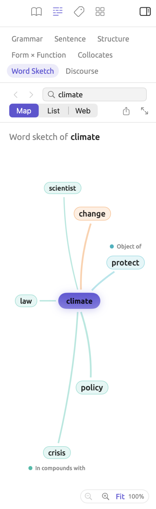
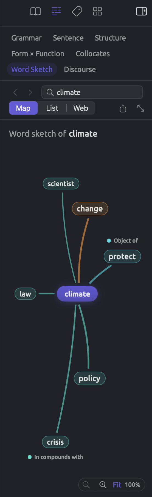
Opening the Grammar tab
Each document in “Climate Debate” has already been indexed (refer to The example project in Chapter 1, Introduction). As such, you can analyze its grammar immediately. Most of the examples provided here come from the opinion piece titled “Running Out of Time”. Your own document receives its grammar upon completion of indexing. Until that time comes, the tab shows Grammar becomes available when indexing completes.
Here’s how you examine a document’s grammar:
- Open the document in the reader.
- Choose View ▸ Inspector ▸ Grammar (⌥⌘2), or click the second icon along the top of the inspector, a line of spaced words. The menu command also shows the inspector if it is hidden.
- Click a facet.
- Click a word in the reader, or select a passage.
Facets follow selections made in the reader. Selecting a word, phrase, or sentence within a facet will also select that word, phrase, or sentence in the reader and scroll it into view.
Each document remembers the facet you last chose. In split view, the inspector describes the document in the active pane, and when you click into the other pane, it shows that document’s grammar in the same facet (see Chapter 9, Translations and Split View).
Supported languages
Documents can be indexed in English, German, and Chinese. If you add a document in another language, the Grammar tab always shows Grammar becomes available when indexing completes. A translation document gets indexed in its own language, which explains why “Running Out of Time (German)” gets German grammar.
The facets work in each language, with minor variations. Sentence shows the sentence pattern only in English documents. In Discourse, German documents feature an additional category under Metadiscourse called Modal particle, while Chinese documents have Final particle under Metadiscourse and Zero anaphora under Cohesion. Two Rhetoric devices are searched for only in certain languages (see Rhetoric later in this chapter).
There are separate tag sets for each language, with the facets using the respective tags of the language’s tag set. English documents use Penn Treebank tags (such as NNS and VBD), German uses Stuttgart-Tübingen tags (NN and VVFIN), and Chinese uses Penn Chinese Treebank tags (NN and VV). Word classes, functions, and phrase types remain constant across languages, so their colors mean the same everywhere.
The Grammar facet
The Grammar facet covers a single word. It describes what the word is, its function in a sentence, the word it depends on, and where else it occurs in the document. This facet comes in handy to verify how LemmaLoom parses the words before creating a query about them, for example.
The figure displays the Grammar facet of leaders in the sentence Our leaders have answered the warnings with dates. from the document “Running Out of Time”.
From the top, the following items are shown:
- The word as it appears in the text, along with the word class, in this case Noun, colored according to the Word class lens.
- Lemma, which, in this case, is leader. This row appears only when the lemma does not match the word.
- Part of speech, which, in this case, displays Noun · NOUN, showing both the name and its corresponding code from the universal scheme used by all three languages.
- Tag, in this case, displays Noun, plural · NNS. Tag represents the word’s fine-grained tag from the tag set of the language.
- FUNCTION displays the relationship between the current word and its head, as Nominal subject · nsubj, including its grammatical function, Subject, which is displayed in that function’s color. The line beneath it rephrases the relationship as Subject of “answered” (a verb). More details about functions, including all ten of them, are discussed in Grammatical function in Chapter 6, Lenses. For warnings in the current sentence, the line will say Object of “answered” (a verb). For Our, it says Modifies “leaders” (a noun); doing an adjective’s job. A relation that fits none of the ten functions, such as the period’s
punct, has no colored function; the line beneath it reads Punctuation of “answered” (a verb). - HEAD provides access to the word’s head, displaying the head word, answered, as a link, followed by its part of speech. It lets you climb up a sentence toward its root. Clicking on answered makes the facet describe the word answered, whose FUNCTION row reads Root of the sentence · ROOT, indicating that this is a root word. The HEAD row reads Root of the sentence, and the line under FUNCTION reads The root of this sentence.
- MORPHOLOGY describes the grammatical features of the word, here Grammatical number Plural. For instance, the word answered in this sentence displays Aspect Perfect, Tense Past, and Verb form Participle, whereas in German, a noun could show its case, number, and gender. Only words possessing morphological properties display a MORPHOLOGY section. In Chinese, words never inflect in regard to tenses and numbers, so the MORPHOLOGY section does not appear for Chinese words.
- OTHER USES IN THIS DOCUMENT lists the other places where a word with the same lemma occurs.
Other uses of the word
The OTHER USES IN THIS DOCUMENT section displays up to 12 other instances in which the lemma occurred. In each instance, you have information showing how the word appeared (spelling), its word class, and role in the sentence (such as Noun · Object). The sentences containing those instances will be displayed as well; selecting an entry selects its corresponding occurrence in the reader.
Entries in which the word has a different word class or function appear before others; entries within a form/role group appear according to order of appearance within the document. The first entry group displays two arrows pointing across each other; hovering the mouse pointer over these arrows reveals A different form or function. This means that either the form or function (or both) of the word differs between the two occurrences.
For instance, in “Running Out of Time”, fear appears as a noun in Although that fear is understandable, but as a verb in Some readers might fear that climate policy will land hardest on families who already struggle. Selecting the noun instance puts the other sentence at the top of the list, with the arrow icons, since fear takes a different word class within that sentence. A noun that occurs as the subject in one sentence, but object in another also receives these arrows. So the arrows represent differences in grammar that could be associated with meaning changes. Use the list to confirm whether a word you intend to count or code is used consistently throughout a document.
Selecting a passage
If, however, your selection is a passage instead of a word, then the facet describes the head word of that passage, which means the first word whose head falls outside of the selected passage itself. For the warnings, that would mean just warnings. However, for answered the warnings with dates, it would mean answered.
The Sentence facet
Sentence is a facet containing a brief description of the currently selected sentence. The facet tells you something about the structure of the sentence (pattern), how long it is, and any phrases contained within it.
The facet begins by stating the number of the selected sentence relative to the beginning of the document, e.g., Sentence 18. If the selection happens to span multiple sentences, then there will be an additional note indicating this, such as Selection spans 3 sentences, followed by a description of the first sentence alone.
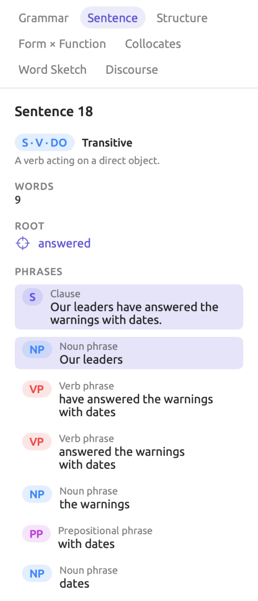
Below the sentence number come the following:
- In English documents, the sentence pattern, represented with a concise formula such as S · V · DO, the name of the pattern (in this case, Transitive), and a description thereof (see Sentence patterns below).
- Words, the token count in the sentence. Note that punctuation is counted here, too; thus, Our leaders have answered the warnings with dates. has 9 tokens.
- ROOT, the root word, as a hyperlink. Clicking the ROOT word selects the word in the reader.
- PHRASES, each and every phrase detected by the grammar analysis of the sentence, from the sentence itself all the way down to individual-word phrases.
The rows of phrases below the PHRASES header indicate, respectively, the label of the phrase (such as NP, colored according to the phrase type), the phrase type itself (such as Noun phrase), and the constituent words. They appear in the order they appear in the sentence; phrases starting at the same word are sorted by decreasing length. Clicking a row selects the corresponding phrase in the reader. Word selections will shade the rows of all phrases containing the selected word.
Sentence patterns
English clause structure falls into a few basic patterns according to what the main verb requires (nothing, an object, two objects, a description of the subject, and so on). The Sentence facet assigns each English sentence to one out of ten possible patterns.
| Pattern | Formula | Example |
|---|---|---|
| Intransitive | S · V | Two students fainted. |
| Transitive | S · V · DO | We do not need another report. |
| Ditransitive | S · V · IO · DO | The mayor gave every school a heat plan. |
| Complex transitive | S · V · DO · OC | The drought left the fields bare. |
| Linking | S · LV · SC | We feel frightened. |
| Be + complement | S · be · SC | None of this is radical. |
| Be + adverbial | S · be · ADV | The cooling center is in the library. |
| Imperative | (You) · V | Come to the farm gate. |
| Question | ? | What exactly are we waiting for? |
| Fragment | a dash | Net zero by 2050. |
In the formulas above, S denotes Subject, V Verb, DO Direct Object, and IO Indirect Object. SC represents the Subject Complement, which can be either a noun or an adjective describing the subject. OC is the Object Complement, a descriptor of the object. LV refers to Linking Verb, while ADV refers to Adverbial. See Help ▸ Glossary under Abbreviations and symbols for definitions.
LemmaLoom tests the patterns in the following order, displaying the first match:
- A sentence that ends with a question mark, or that the grammar analysis parses as a question, is a Question.
- A sentence whose root is not a verb is a Fragment, unless the phrase analysis finds a clause in it (a label such as
SorSBAR), in which case it is Intransitive. A sentence for which the analysis finds no root is a Fragment as well. - A sentence whose main verb is in its base form and has no subject is an Imperative. Be is left out of this test, so Be careful counts as Be + complement (rule 4).
- When the main verb is be, the sentence is Be + complement if a noun or adjective follows that describes the subject. Otherwise, it is Be + adverbial, as in She was on her front step until three.
- A linking verb followed by a complement makes the sentence Linking. The verbs that count as linking are seem, become, appear, feel, look, taste, smell, sound, remain, prove, stay, grow, turn, get, and go.
- A direct object with an object complement makes it Complex transitive.
- An indirect object and a direct object make it Ditransitive.
- A direct object alone makes it Transitive.
- Anything else is Intransitive.
A pattern suggests a frame that a writer uses regarding an event. For instance, the sentence We block the roads is Transitive, and the writer acts on something. On the other hand, the sentence We feel frightened is Linking and describes a state.
Patterns refer to main clauses only. For example, in I think we need a plan, the main verb think is followed by a clause and not an object, so the sentence is classified as Intransitive despite need having an object in its clause. In columns and debates, sentences that start with I think are therefore mostly Intransitive. When the analysis misreads a sentence, the pattern assigned to it reflects that misreading, and the Structure facet shows how the analysis read it.
The Structure facet
The Structure facet allows viewing the selected sentence in three diagrams stacked below each other, under the headings Anatomy, Dependency graph, and Constituency Tree. Selecting any element within these views selects it in the reader.
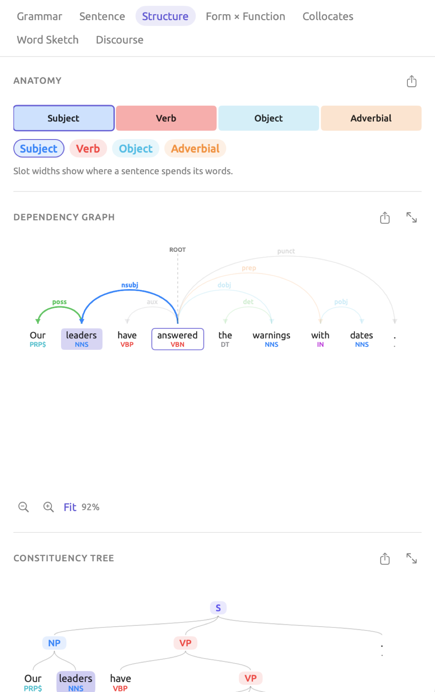
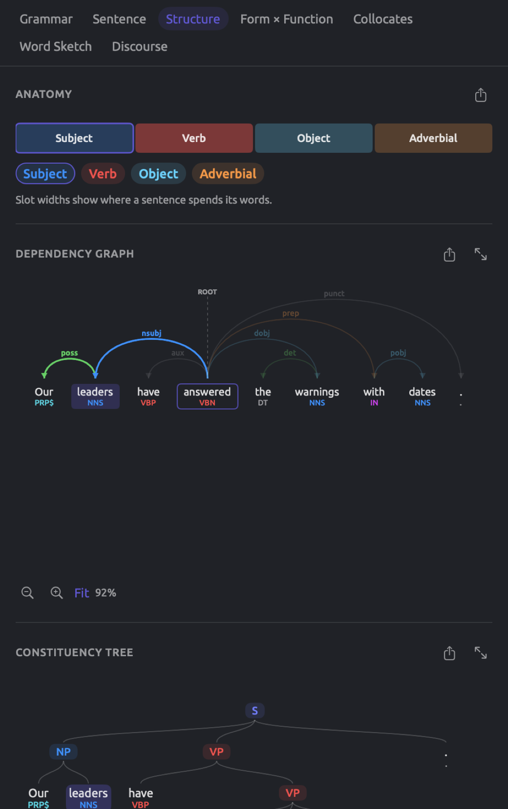
Anatomy
The Anatomy bar segments a sentence into the various parts of its main clause. One slot, known as the Verb slot, contains the main verb along with any auxiliary verbs and not that belong to it. Every other slot, meanwhile, contains one particular element which depends directly on the main verb, with all the words that belong to it; the element can be the subject, an object, or an adverbial.
Slots are labeled according to their function and colored depending on the function’s color scheme. Parts that cannot be fit into any particular function will be shown in gray with a label showing their relation, and the Verb slot is shaded more strongly than the others.
Each slot’s size is proportional to how many tokens are contained in the slot; hence, a sentence such as Our leaders have answered the warnings with dates. will have four equally sized slots, Subject (Our leaders, 2 tokens), Verb (have answered, 2), Object (the warnings, 2), and Adverbial (with dates, 2). Slots which contain too few tokens may have their sizes exaggerated somewhat to retain visibility.
Below the bar is a control button for each slot. The button displays the slot’s name and corresponding color. Pressing any slot button selects its words in the reader. Alternatively, clicking on a slot in the bar itself does the same thing.
In the grammar analysis of German sentences, the finite verb (the verb form that changes with the subject) becomes the root of the sentence rather than the main verb. So for the sentence Die Wissenschaft hat ihre Arbeit eindeutig erledigt, the Verb slot will hold the finite verb hat, while the participle erledigt (‘done’) and the words that depend on it form another slot called Complement, ihre Arbeit eindeutig erledigt.
Dependency graph
In the Dependency graph you’ll see a graphical representation of the head of each word in a sentence. Each word is shown arranged on a horizontal line in sentence order, while tags are displayed beneath each word, colored according to word class. Arcs connect each word with its head. The arc points toward the dependent word, while relation codes are shown above the arc, colored according to function. Finally, a dashed line connects the root to ROOT above.
In Our leaders have answered the warnings with dates., there are five arcs emanating from answered, namely nsubj (leaders), aux (have), dobj (warnings), prep (with), and punct (the period). Our modifies leaders as poss, while the modifies warnings as det; dates depends on with as pobj.
Shorter arcs are drawn lower. Anytime an arc passes over another arc, it is drawn higher, giving insight into how nested the sentence structure is. Hover the mouse pointer over relation codes and tags to display their full names, e.g., Nominal subject for nsubj, or Noun, plural for NNS. German has unique relation code names as well, e.g., sb for subject and oa for accusative object. Chinese uses most relation code names used in English, but does have additions like nmod:topic for a topic.
Select any word by clicking it. Selected words will be shaded, while their head is outlined. Additionally, all arcs originating from or leading to selected words will be made thicker, while the remaining arcs are faded out.
The dependency graph is the right place to look if you are confused about the interpretation of some sentence structures. Consider “Why We Block the Roads”. One of its sentences begins I have marched through the city center with forty thousand people. The prepositional phrase with forty thousand people could modify either marched (the writer marched alongside them) or center (a center containing forty thousand people). Find the arc whose arrowhead touches with; whichever word touches the opposite end, marched or center, shows the reading the analysis chose. A wrong decision here propagates into the Grammatical function lens, sentence patterns, Form × Function, and word sketches.
Constituency tree
The Constituency Tree is a view of how words organize into phrases. At the top level lies the entire sentence, usually designated by the label S. Every phrase breaks down into smaller constituent phrases and individual words contained inside. A word will hang below the smallest phrase it belongs to, along with its part-of-speech tag. Therefore, a word in a deeply-nested phrase is displayed at a lower depth level than those in less nested phrases. Each type of phrase receives a distinct color based on the Phrase lens coloring scheme (see Phrase in Chapter 6, Lenses). Clauses have their own distinct color.
For the example sentence, the Constituency Tree breaks down the sentence S into the noun phrase Our leaders and the verb phrase have answered the warnings with dates. Within that latter verb phrase lies another verb phrase answered the warnings with dates. This final verb phrase contains both a noun phrase the warnings and a prepositional phrase with dates. The exact breakdown you see may differ from the one shown here.
To see the full name of a phrase, hover the mouse pointer above its label, such as Prepositional phrase for PP or Subordinate clause for SBAR. You can click either a label or a word node to select the corresponding phrase or word in the reader. When the grammar analysis finds multiple parts to one sentence, the Constituency Tree organizes all of those beneath another higher-level label S.
Labels differ depending on the language. English uses Penn Treebank labels like NP, VP, PP, and SBAR. German makes use of AP and AVP labels for adjective phrases and adverb phrases respectively. Chinese labels follow Penn Chinese Treebank conventions, with IP for a clause and DNP for a phrase with 的.
Zooming and scrolling
Dependency graphs and constituency trees are initially shown scaled to the width of the inspector, up to their true size. A long sentence will therefore start out quite small. The anatomy bar will consistently be shown at the width of the inspector. Beneath both the dependency graph and the constituency tree lies a zoom bar:
- Zoom out and Zoom in, the magnifying glasses with either a minus or plus sign, will respectively shrink or grow your diagram by 1.25 times per click until reaching their minimum/maximum limit, where they become disabled, showing the tooltip Fully zoomed out or Fully zoomed in.
- The Fit button rescales your diagram to the width of the inspector.
- Percentages indicate the relative size of the diagram, which is always between 25% and 600%.
In addition to clicking buttons, you may pinch-zoom using a trackpad or scroll through the diagram if its contents don’t fit the inspector. Before you’ve begun to manually zoom in/out, changing the width of the inspector will rescale your diagram accordingly. Selecting another sentence keeps your zoom; click Fit to fit the new sentence. The Diagram window provides additional viewing space when necessary.
The Diagram window
The Diagram window displays either a dependency graph or constituency tree at any size, up to fullscreen. To open it, click Open in a window (icon showing two diagonal arrows) next to either Dependency graph or Constituency Tree in the Structure facet.
The Diagram window comes up showing the chosen diagram. Dependency and Constituency in the upper-left corner toggle between both diagrams. The two arrows in the upper-right corner (Previous sentence and Next sentence) navigate through the document, and the text beside them displays what sentence you are currently viewing (e.g., Sentence 18 of 65).
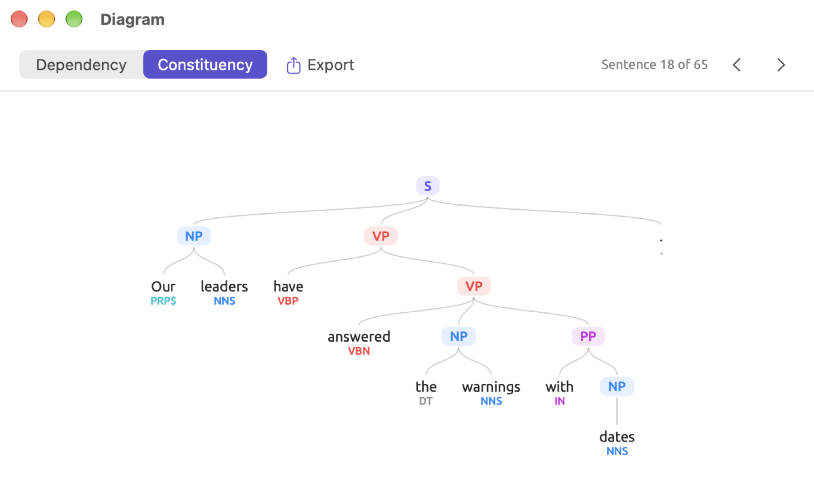
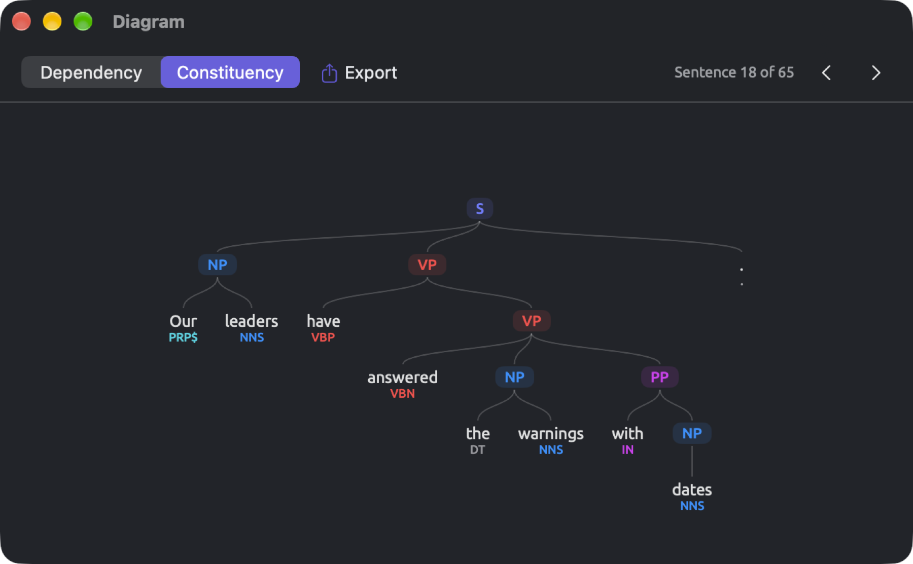
The Diagram window always shows the selected sentence of the active document. When you click on any word in another sentence of the reader, the Diagram window follows. Clicking on an arrow selects the root word of the next/previous sentence and scrolls the reader to show it; at the first and last sentence, the arrow that would go further is disabled, with the tooltip Already first or Already last. Clicking on a word or phrase in the diagram will select it within the reader.
When the window opens, the diagram is fitted to the window at no larger than its actual size. There is a zoom bar located on the bottom right corner of the Diagram window that acts similarly to the inspector zoom bar, going from 10% to 800%. The Fit option fits the whole diagram into the window. Other view actions you can do include:
- Zoom in/out with pinch gestures on trackpads, or via the menu options View ▸ Zoom In (⌘+) and View ▸ Zoom Out (⌘-) respectively.
- Choose View ▸ Actual Size (⌘0) for actual-size views.
- Double-click the diagram or choose View ▸ Zoom to Fit for fitting it inside the window.
- Drag the diagram, or scroll with two fingers, for navigation around diagrams.
When stepping between sentences, the Diagram window retains the current zoom level and pan position. Double-click or click Fit to fit a newly loaded diagram. When no sentence is selected in the reader, the Diagram window shows Select a Sentence.
Exporting a diagram
Each of the three headings within the Structure facet has an export button, which looks like a square with an arrow. Within the Diagram window itself, the Export menu is located alongside Dependency and Constituency.
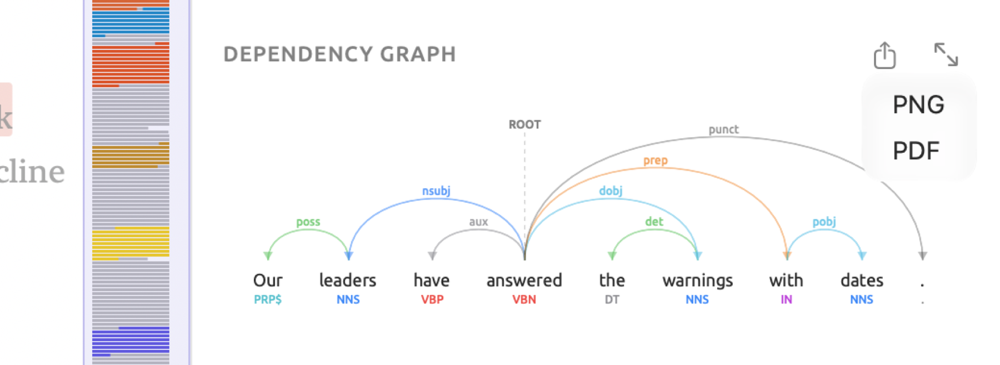
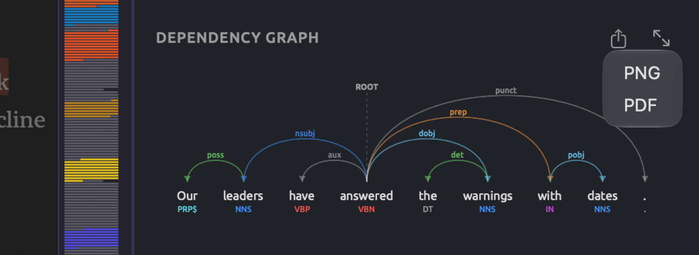
Exporting a diagram:
- Click the export button and choose PNG or PDF.
- In the save dialog, choose a name and a place. The suggested name gives the diagram and the sentence number, such as
arcs-sentence-18for a dependency graph,tree-sentence-18for a constituency tree, andanatomy-sentence-18for an anatomy bar. - Click Save.
The contents of your diagram are saved at its true scale regardless of zoom. Your anatomy bar is exported 640 points wide. PNGs are images at double resolution, sufficient for slideshow presentations and documents in a word processor. For printing purposes, opt for PDF since this format ensures clarity at any size.
PNGs and PDFs both render using your selected color theme accordingly, meaning that a diagram with a dark theme would have a dark-colored background. If you require a diagram with a white background, set Theme to Light under Appearance in the General pane of Settings before you export (see Chapter 24, Settings and Appearance).
The Form × Function facet
Grammar separates the structure of a phrase (known formally as form) from its purpose or role in the sentence (known formally as function). Form and function operate independently from one another. The following examples illustrate that the same form (noun phrase) can fulfill various functions. In our leaders have answered the warnings, the noun phrase our leaders acts as a subject; in we do not need another report, the noun phrase another report acts as an object; in this summer the heat closed schools, the noun phrase this summer acts as an adverbial. Similarly, a specific function may be performed by different forms. As seen in “Running Out of Time”, a neighbor sat on her front step until three in the morning because her apartment had turned into an oven. The adverbial on her front step is a prepositional phrase, while the adverbial because her apartment had turned into an oven is a clause.
The Form × Function facet computes how often each form fulfills each function across the entire document. These calculations are organized in a matrix. The matrix essentially provides a profile of a document’s stylistic preferences, for instance whether or not the writer tends to compress ideas in noun phrases, or elaborate reasons and conditions through clauses (see Using the matrix later in this chapter).
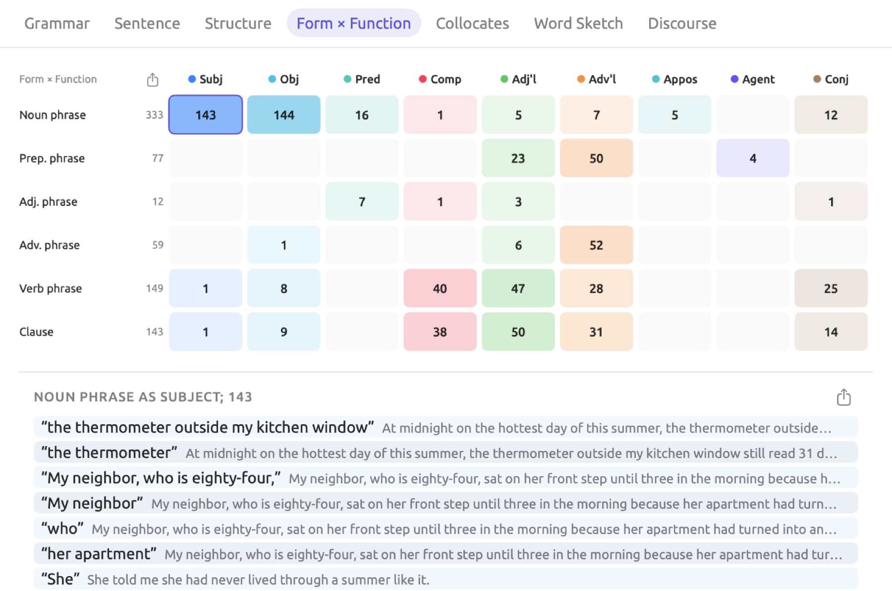
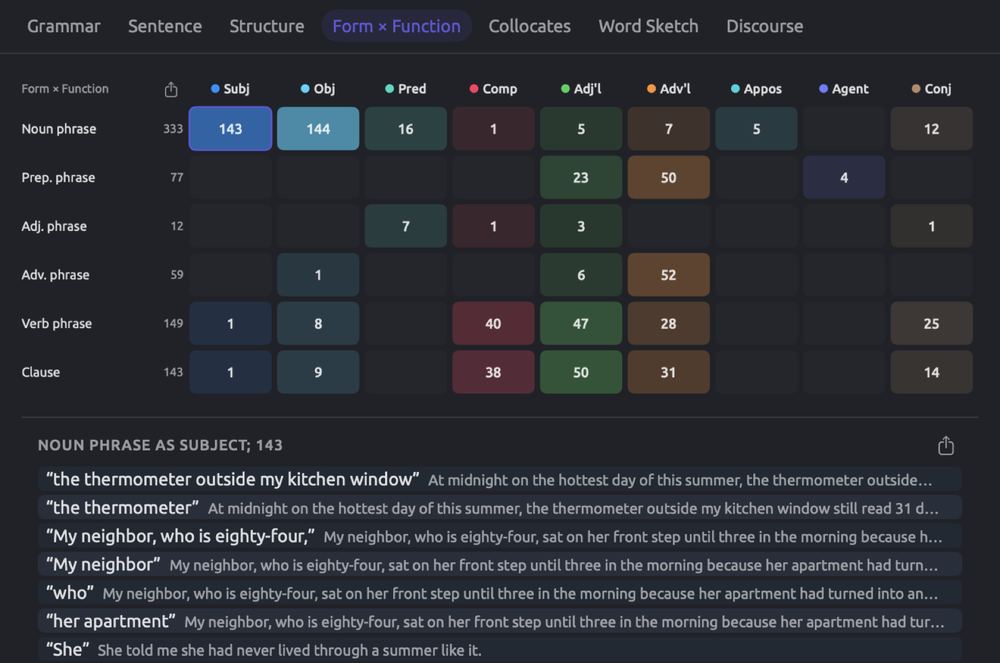
Reading the matrix
The rows represent the six forms (Noun phrase, Prep. phrase, Adj. phrase, Adv. phrase, Verb phrase, and Clause). Each row is displayed only if there are phrases of that form in your document that have been counted. To the right of each row name is the total of all numbers in that row.
The columns are functions in short form, Subj (subject), Obj (object), Pred (predicative), Comp (complement), Adj’l (adjectival), Adv’l (adverbial), Appos (appositive), Agent (agent), and Conj (conjunct), nine of the ten grammatical functions from the Grammatical function lens. Grammatical function in Chapter 6, Lenses will introduce each of these functions along with an example.
Each cell contains the number of phrases of its particular form performing its particular role. The deeper the shade of the cell, the nearer its number gets to the maximum number in the whole matrix. An empty cell does not contain a number and states No matches when hovered over. The matrix in a narrower inspector reduces its size and becomes horizontally scrollable.
How to view the actual phrases behind a cell:
- Click the cell.
- Click an entry in the list below the matrix to select the phrase in the reader.
- Click the cell again to close the list.
The list is headed with the type of phrase, its purpose (i.e., the function it performs), and the total number of occurrences, such as NOUN PHRASE AS SUBJECT; 143. Each entry is a phrase in quotation marks, followed by its sentence. The actual list contains the first 40 examples and includes a line like and 103 more below them.
If your document contains no phrases to count, the facet will say No Phrases Yet rather than show the matrix.
How phrases are counted
Phrases are labeled according to their form from the grammar analysis. In other words, the form is the exact same label you would get for the phrase’s subtree on the constituency tree diagram. Phrases’ functions are determined by the function of their head word, the first word in a phrase that has its own head lying outside of the phrase itself. Thus, in the phrase on the farm, the words the and farm depend on words inside the phrase, whereas on depends on a word outside of it. Therefore, on is the phrase’s head word, and its relation determines the function. Depending on whether the phrase is attached to a verb (we work on the farm) or a noun (the fields on the farm), the function becomes either adverbial or adjectival.
All phrases, including nested phrases, count toward the matrix. For instance, the sentence Our leaders have answered the warnings with dates adds four separate phrases to the matrix:
| Phrase | Head word | Row | Column |
|---|---|---|---|
| Our leaders | leaders | Noun phrase | Subj |
| the warnings | warnings | Noun phrase | Obj |
| with dates | with | Prep. phrase | Adv’l |
| dates | dates | Noun phrase | Obj |
The verb phrases have answered the warnings with dates and answered the warnings with dates get dropped; indeed, the whole sentence gets dropped too, because all three are headed by the root answered, which has no function in the matrix. Additionally, a phrase whose head word is a connector or has a relation that fits no function is left out.
A preposition object, such as dates in with dates, belongs to Obj because Obj comprises both preposition objects and verb objects. Thus, every prepositional phrase contributes a noun phrase into Noun phrase × Obj, making this cell one of the biggest cells in the matrix in most documents.
If one phrase has two labels as determined by the automatic analysis, such as to protect the climate our children will inherit in “Running Out of Time”, which is both a clause and a verb phrase, the phrase receives an entry in each row, meaning the sum total of rows may exceed the actual number of phrases in some cases.
Using the matrix
When Adj’l features a large share of prepositional phrases (a preliminary analysis by the agency’s climate science unit), that indicates complex noun phrases, as is common in written reports such as “Heat Wave Report 2024”. A high share of clauses in Adv’l (such as because…, when…, if…) signifies the presence of elaborations on reasons, time, and conditional contexts. The presence of mostly single pronouns (per the list behind the cell) as noun phrases in Subj indicates spoken language, as in “Radio Debate”.
Note that the cell numbers indicate raw counts, so larger documents automatically have greater numbers across the board. In “Running Out of Time”, 143 out of the total 333 noun phrases act as the subjects, giving the proportion a value of 143 ÷ 333 = ~43%.
Exporting the matrix
At the top left of the matrix, beside Form × Function, is a button to export the entire matrix in PNG, PDF, or CSV format. If exporting in CSV format, you receive a file containing rows for each unique form and columns for Form, Total, and each function, under its complete name. The suggested filename is form-function.
In the list below the matrix, you’ll find another export button that exports all the phrases found in the selected cell to a CSV file. In this case, the suggested filename is the form and function combined with a hyphen, e.g., Noun phrase-Subject. This CSV file contains the columns Sentence (sentence number), Phrase, and Text (complete sentence).
The Collocates facet
Collocates of a word are words that appear around it more frequently than would be predicted by random distribution alone. As seen in “Running Out of Time”, the word climate appears in phrases such as climate science, the climate crisis, today’s climate policy, and protect the climate. Collocates of a word tell you what topics and fixed phrases the word typically occurs with, which can inform you about how the topic was conceived by the writer. The word being analyzed here is referred to as the node.
The Collocates facet looks for collocates within the active document. When looking for collocates of a word in multiple documents, use the Collocates recipe in the Queries of your set (see Collocates in Chapter 16, Query Results and Statistics). The Word Sketch facet also serves as an alternative to finding collocates; however, unlike the Collocates facet, word sketches find partners based on grammatical relations rather than distance (see Chapter 12, Word Sketch).
Listing a word’s collocates
The figure below displays the collocates of climate in “Running Out of Time”, sorted by log-likelihood score.
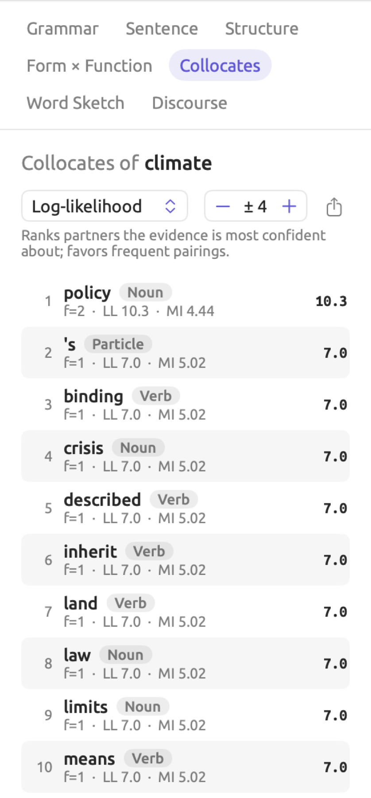
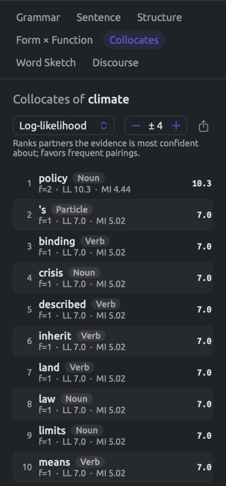
The process for listing the collocates of a word:
- Select the node in the reader.
- Click Collocates. The heading names the lemma, such as Collocates of climate, because every form of the word counts (climate and climates alike, and for a word such as cost, the verb as well as the noun).
- Choose a measure from the menu at the top left. It shows Log-likelihood at first; the other measures are MI, t-score, and logDice (see The association measures later in this chapter). A line below the controls says what kind of collocate the chosen measure favors.
- Set the size of the window with the stepper at the right. It shows ± 4 at first and goes from ± 1 to ± 10 (see What counts as near below).
This list displays each collocate found sorted according to your selected measure, highest first. Every row contains:
- the rank;
- the collocate (followed by its part of speech);
- a line like f=8 · LL 36.8 · MI 4.32, where f stands for the frequency of the collocate near the node, LL denotes log-likelihood, and MI represents mutual information;
- at the right, the actual value of your selected measure.
The collocates are counted according to lemmas, just like your node is. They appear according to their exact spelling in their first occurrence in the document, with the part of speech they have there.
When you click any row, it will select the first occurrence of the collocate in your document. The facet follows the selection, displaying the collocates of whatever you clicked on instead. Selecting climate again will reverse the action.
Your facet retains the measure and window parameters during any selections. After switching facets or documents, however, both revert to Log-likelihood and ± 4 respectively. When no word is suitable as a collocate, the facet shows No content collocates within ± 4.
The export button to the right of the stepper exports your current collocates into a CSV file named after the node, such as collocates-climate. The order of the rows reflects the sort order of the list. The columns are Rank, Collocate, Part of speech (coded like NOUN), Frequency (f), Expected, Log-likelihood, MI, MI3, t-score, z-score, Dice, and logDice.
What counts as near
With regard to each instance of your node, LemmaLoom considers the positions up to the window size before it and after it within the same sentence. With ± 4, that means looking four tokens prior to your node and four subsequent tokens thereafter. Each token occupies one position regardless of whether it is a punctuation mark or a stopword. Stopwords refer to very common words such as the, and, of, and we, and each language has its own list. Punctuation marks, stopwords, and further instances of the node will not be included in your collocates.
Consider Some readers might fear that climate policy will land hardest on families who already struggle. with climate as the node, and a ± 4 window. Positions preceding the node are comprised of the words readers, might, fear, and that; positions succeeding it are made up of the words policy, will, land, and hardest. Words like might, that, and will are all stopwords, so the window counts five words (readers, fear, policy, land, and hardest).
When there are two occurrences of the node close to each other, any word occurring between them is within the range of two windows simultaneously and is counted twice.
The Collocates recipe in queries counts differently. There, only words occupy positions, and stopwords and other occurrences of the node become collocates; the window size starts off with 5 instead of 4 as well. Thus, the lists generated in either place may differ greatly from each other for the same word.
The association measures
The measures used in the facet quantify how often a collocate has occurred near the node compared to how often it would have occurred by chance alone. What makes each measure unique is the relationship between the magnitude of the difference and the total number of observations used in calculating that difference, and each measure favors a particular type of partner accordingly.
Suppose there is a fictional 5,000-word magazine feature article on the topic of a summer heat wave in which climate is observed 20 times. The numbers in the following calculations are purely made up to simplify them; the documents in the example project are substantially shorter. With ± 4, the windows would contain 100 counted words in all. Suppose that crisis is observed 20 times within the document, but 8 of these occurrences fall within the windows around the node climate. This gives four numbers as follows:
- , the number of times crisis occurred within the windows (the f of its row);
- , the total number of counted words in all the windows;
- , the total number of occurrences of the word crisis in the document;
- , the total number of counted words in the document, not including punctuation or stopwords.
Expected count
If crisis occurred randomly throughout the feature, it follows that the windows should get their fair share of the occurrences of crisis. Holding 100 out of the total 5,000 words, the windows should have 0.4 instances out of 20 instances of crisis, as shown by the following equation for the expected count:
The expected number of occurrences does not necessarily take integer values because this is just an average figure. On average, then, less than one occurrence of crisis is expected within the windows, whereas there are 8 occurrences of crisis in reality. All statistical measures below quantify how far 8 occurrences deviate from an expectation of 0.4 occurrences. The export lists in its Expected column.
Mutual information
Mutual information, shown in the menu as MI, expresses how much more often the collocate occurs near the node compared to expectation, as a number of doublings:
The logarithm with base 2, denoted as , measures the number of doublings, so since 2 × 2 × 2 = 8. Similarly, , values greater than 1 give positive logarithms, whereas values between 0 and 1 provide negative results. If your calculator lacks , calculate the logarithm of the value over the logarithm of two, as in .
In the case of crisis, , meaning it occurs twenty times as often near climate as chance predicts. Since 20 is between 16 (which equals four doublings) and 32 (five), . An MI value of 0 indicates occurrence as often as expected, whereas an increase by one represents double that frequency.
The scoring system used for MI penalizes non-exclusive relationships and thereby favors rare words. Consider the hypothetical scenario wherein neutral occurs two times in the feature and occurs exclusively alongside climate. Then its expected occurrence will be , giving it a mutual information score of , exceeding the score of crisis. Apart from words counted twice in overlapping windows, no other word could score higher than that. A word that appears exclusively with climate obtains , resulting in regardless of its number of occurrences being 1 or 20.
t-score
The t-score is calculated by dividing the difference between the observed frequency and expectation by the square root of the observed frequency. The equation looks like this:
For crisis, . As the square root in the denominator increases slower than the count above it, the higher the number of observations of a pair is, the greater its t-score can become. Therefore, t-scores tend to favor common pairs that occur consistently. In corpus linguistics, a t-score exceeding 2 is usually taken as a sign that the pair is more than chance. For neutral, , which does not exceed 2 although both of its occurrences fall near climate.
logDice
The Dice coefficient compares the number of times the two words meet () with the words in the windows plus the occurrences of the collocate ():
Dice lies between 0 and 1. A score of 1 for Dice indicates that all of the words within the windows are instances of the collocate and that every occurrence of the collocate falls in the windows. logDice uses a range up to 14, where each decrement by 1 is equivalent to dividing the Dice ratio by 2.
If, for example, the collocate was crisis, then ; its base-2 logarithm will be around −2.91; thus, the logDice score becomes .
Because logDice ignores the overall length of the document (), changes to logDice scores tend to be minimal regardless of variations in text length. However, logDice does rely on the number of words in the windows ().
Log-likelihood
Log-likelihood is the statistic the list starts with. Essentially, it tells you the strength of the evidence that the collocate’s count around the node occurs not by mere coincidence. It considers all combinations of “is or is not crisis” and “lies in a window or elsewhere.” Each word falls into exactly one of the four cells below:
| crisis | Other words | Total | |
|---|---|---|---|
| In the windows | 8 | 92 | 100 |
| Elsewhere | 12 | 4,888 | 4,900 |
| Total | 20 | 4,980 | 5,000 |
The 92 is , meaning the number of occurrences of the other words in the windows. The 12 is , the number of occurrences of crisis elsewhere. The 4,888 is , meaning everything else. The cells have an expected count, calculated just as before by taking the product of the row total and column total, then dividing by the grand total. This results in expected counts of 0.4 (for crisis in the windows, , the from above), 99.6, 19.6, and 4,880.4 respectively.
The score calculates how far away the actual counts of each cell lie from their expectations:
Here refers to the observed count of each cell, to its expected count, and (the capital letter sigma of the Greek alphabet) stands for “add up over the four cells.” Finally, represents the natural logarithm function, found on calculators with the ln button. Similar to , the function returns 0 if its argument is 1, a positive value if greater than 1, and a negative one otherwise. Thus, if the observed count of a cell matches its expectation perfectly, nothing is added to the total; otherwise, if greater, a positive contribution is added, while if lesser, a negative contribution is added. Since positive contributions will always outweigh negatives, the score cannot take a negative value. The score is written , where the 2 does not mean that anything is squared.
In the case of crisis, the four parts are:
When multiplied by 2, the approximate outcome becomes 36.8, the value found in the row for crisis. By including the factor of 2 and applying the natural logarithm function, this score now aligns itself with the entries of the chi-square table with 1 degree of freedom, a table normally used when doing chi-square tests on 2 × 2 crosstabs.
According to that table, scores equal to or higher than 3.84 would occur purely by coincidence 5% of the time for unrelated words, while 6.63 is equivalent to 1%, and 10.83 to 0.1%, or 1 in 1,000. Such a percentage is called the p-value; it reflects how surprising a given score would be if the two words were unrelated. Note, however, that the p-value does not indicate whether or not the relationship between the two words actually exists; rather, it provides information as to how surprising a particular observation was assuming independence. In this example, crisis received a score of 36.8, considerably greater than all three figures mentioned.
Since the list tests each potential word candidate, among 100 completely unrelated words, about 5 would, on average, achieve 3.84 purely by coincidence. Also note that values in the chi-square table assume that expected counts are not tiny.
The score does not show which way the counts differ. If heat occurs 200 times in the feature but only once near climate, its expected count is , its log-likelihood 3.4, and its MI . A negative MI in the row shows that the word occurs near the node less often than chance would predict.
Log-likelihood favors large differences and high frequencies of the counts. This explains why log-likelihood is the default measure. For instance, neutral occurs 50 times as often as expected but only twice; its log-likelihood is 15.7. Consider another word. If people occurs 100 times in the 5,000-word feature, but only 6 times in proximity to climate, its expectation would be 2, so it occurs 3 times as often as expected. Three times over six occurrences is weaker evidence than fifty times over two, so log-likelihood comes to only 5.5.
Comparing the measures
Ranking the three words yields varied results based on the measure:
| Collocate | Log-likelihood | MI | t-score | logDice | |||
|---|---|---|---|---|---|---|---|
| crisis | 8 | 20 | 0.4 | 36.8 | 4.32 | 2.7 | 11.09 |
| neutral | 2 | 2 | 0.04 | 15.7 | 5.64 | 1.4 | 9.33 |
| people | 6 | 100 | 2 | 5.5 | 1.58 | 1.6 | 9.94 |
Log-likelihood ranks crisis first and neutral second because even two occurrences in the context of a 0.04 expected count are unlikely. As both instances of neutral appear close to climate, MI ranks it first. The t-score, however, has reservations regarding so few occurrences and favors people over neutral because six occurrences carry more certainty than two occurrences. logDice sides with the t-score on this one.
In general, begin with Log-likelihood. Apply logDice if you require a measure that you can compare between documents, and use t-score if you want the partners of a particular word with the highest frequency. MI, meanwhile, is meant for exclusive partnerships; check their f values.
The CSV export provides an additional three measures. MI3 equals ; the third power means that common occurrences receive heavier weighting than in MI (10.32 for crisis). z-score is calculated as . This results in extreme numbers for rare occurrences due to the denominator becoming vanishingly small (12.02 for crisis). Finally, Dice equals the coefficient without taking its logarithm (0.133 for crisis). Help ▸ Glossary defines every measure under Association measures, and Word association scores in Chapter 27, Statistics at a Glance sets them side by side.
The Discourse facet
Discourse is a whole-document facet for questions about the structure and style of the text itself. There are three sections of this facet, chosen with the buttons at the top:
- Cohesion indicates the relationships between a sentence and the sentences prior.
- Metadiscourse lists the words with which speakers comment on what they say and address their listeners.
- Rhetoric includes stylistic choices, including the use of passives, nominalizations, and fronted openers (a phrase placed before the subject). Nominalizations involve turning actions into nouns; decision, derived from decide, is an example of nominalization.
The categories within each section are annotated in the text according to the lenses of the corresponding names. Cohesion and the two sections after it in Chapter 6, Lenses describe each annotation procedure in detail.
The findings come from built-in analyzers of the same names that run at indexing. As these analyses load, the facet shows a spinner. If the analyzer does not run for the document, for example because its output was removed in Document Properties, there is either a No Cohesion Data, No Metadiscourse, or No Rhetorical Devices message displayed depending on the analyzer (see Chapter 21, Analysis and Indexing). Such messages will also show up when the document simply does not contain anything of the kind.
If there is no space for the section buttons, they are replaced with a menu where each button is represented. Your choice will persist separately for every document you inspect.
The list of categories
There is consistency in the layout between each of the three sections. Right underneath the section buttons is the Search field, followed by rows corresponding to each category with findings, displaying the category color, its name, and the number of findings in it. The category rows are collapsed initially.
For viewing findings within a category:
- Click its row to open it. In Metadiscourse and Rhetoric, a line describing the category appears first.
- Click a finding to select its sentence in the reader.
- To see the category annotated in the text, click Highlight in text (see Highlighting a category below).
Categories display their first 200 findings, followed by a line such as and 38 more. Navigating away from this section will cause the opened categories to collapse again.
Cohesion
Cohesion categorizes each sentence based on its theme, what the sentence begins with. A theme is defined as the subject of the main verb along with all its words in English; everything preceding the verb (or the subject if nothing precedes the verb) in German; and the topic in Chinese, or the subject when the analysis finds no topic (see Cohesion in Chapter 6, Lenses). If a theme includes a third-person personal pronoun or possessive (they, their) or demonstrative (this), or repeats a word from either of the previous two sentences, then the sentence is tied. Otherwise, the sentence opens a new topic.
Two counts above the categories give totals for tied sentences and new topics. For “Carbon Tax Debate”, these two totals are 20 tied and 13 new topic. The opening sentence of a document, under Opening, counts as tied.
Categories show up in the following order, each followed by the sentences which belong to it. Following each sentence is a line which provides an explanation for why it is so classified:
| Category | Line below the sentence |
|---|---|
| Opening | Opens the passage |
| Pronoun tie | Known: pronoun “They”, naming the pronoun |
| Possessive tie | Known: possessive “Their” |
| Demonstrative tie | Known: “This” points back |
| Repeated word | Known: repeats “climate”, naming the repeated word |
| Zero anaphora | Known: omitted subject continues the topic (Chinese only) |
| New topic | New topic in the subject; possible cohesion gap |
All the sentences listed under New topic should be read successively. In “Carbon Tax Debate”, clusters of new topics can indicate where jumps occur in the text, gaps the reader has to cross without any guidance.
Note, however, that in this context, a sentence lacking any testable theme (no subject in English, no subject or anything preceding a finite verb in German), e.g., Around five times., qualifies as a New topic as well; such sentences are frequent in transcripts. When working with Chinese texts, a sentence may qualify as Zero anaphora rather than a New topic provided that its omitted subject continues the previous topic. The Cohesion check category of Rhetoric does not account for them and lists only those new topics that contain a subject and at least six words.
Metadiscourse
Metadiscourse organizes its findings into Hedge (perhaps), Booster (clearly), Attitude marker (unfortunately), Connective (however), and Engagement (you, we). Metadiscourse also has Modal particle (ja, doch) for German texts and Final particle (吗, 吧) for Chinese texts. Every finding comes with the word in quotation marks and its sentence.
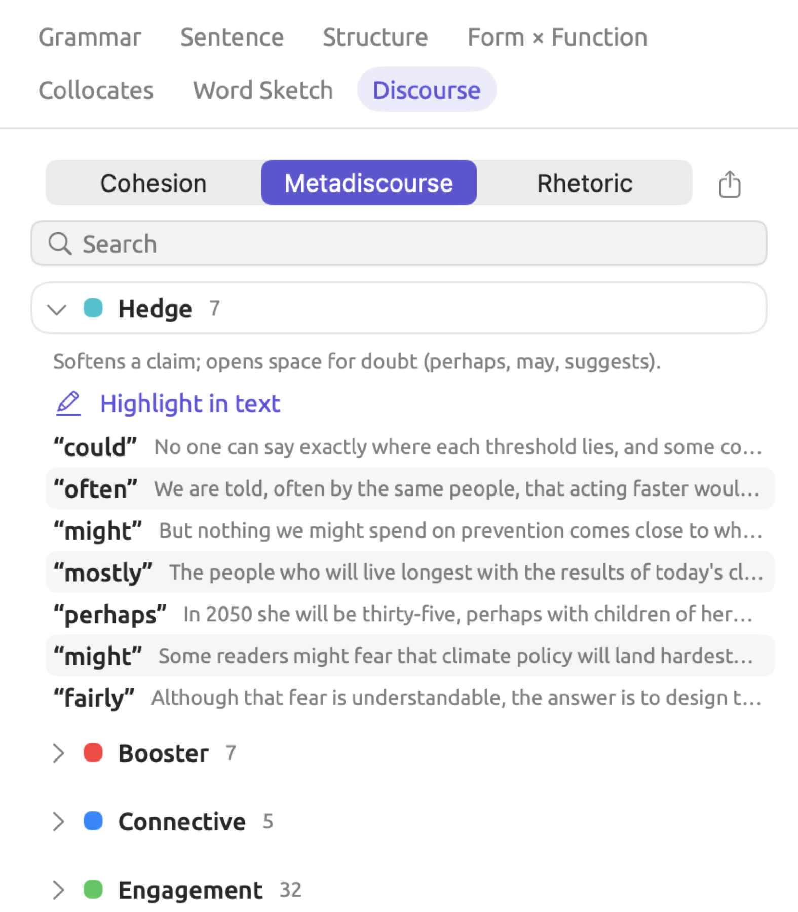
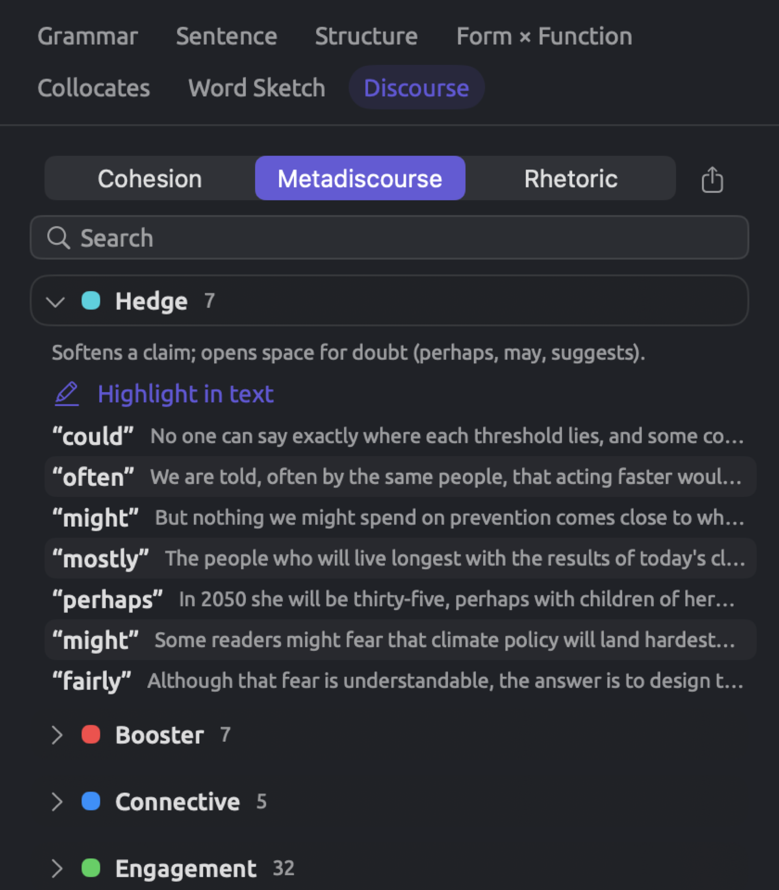
Comparing the metadiscourse categories of one particular document will give you an idea about the writer’s stance on their topic. If a columnist uses lots of hedges (perhaps, probably, might) and few boosters (clearly, certainly), they may sound tentative. Engagement often makes up the biggest metadiscourse category in political speeches and opinion columns since engagement includes both we and you.
LemmaLoom comes equipped with the lists for counting metadiscourse. However, if you wanted to count hedges with your own list of words, for example, the “Hedges” dictionary from the example project, then read Chapter 19, Dictionaries. Unlike the default list, the “Hedges” dictionary also includes I think (under “Shields”). The counts returned by this facet pertain exclusively to the selected document. Comparing counts from documents of different sizes can be misleading without normalization. As an example, 6 hedges in a 600-word column equal 6 ÷ 600 × 1,000 = 10 occurrences per 1,000 words (see Measures in Chapter 16, Query Results and Statistics).
Rhetoric
Rhetoric has categories for each of the thirteen devices found in the Rhetoric lens that the document contains, including Passive voice, Nominalization, Power word, and Correlative pair (see Rhetoric in Chapter 6, Lenses). The Absolute phrase device is looked for solely in English, while the Periodic sentence device (sentences in which the main verb is delayed) is looked for in English and German.
Findings include all of the words found along with notes explaining the reasoning for identifying those words as instances of the device. An agentless passive, for example, will receive the note Agentless passive; the doer goes unmentioned entirely. If the doer is retained but in a by phrase, then the note will reflect that. For periodic sentences found in English, the notes include the main verb of the sentence as well as its location within the sentence. Notes appear in the interface language. Queries and custom analyzers receive the notes in English.
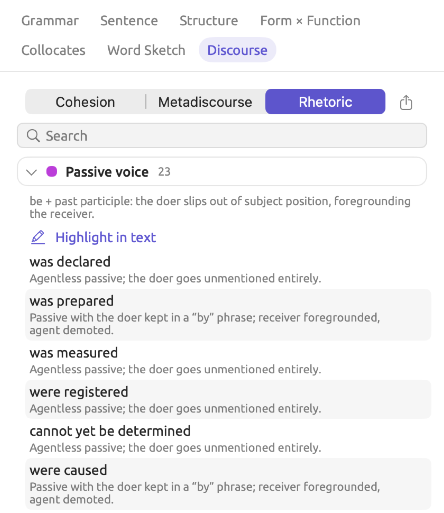
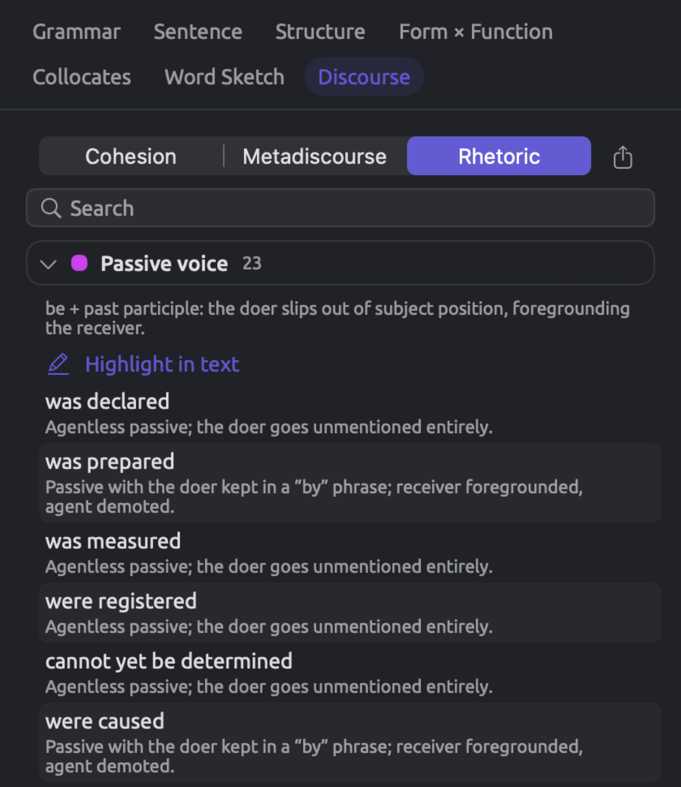
Annotation in the lens will only tag one device per word, while the facet will list each finding regardless of duplicates. It follows that the same words can come under two different devices in the facet.
Passive voice is the category to read for questions of agency. In “Heat Wave Report 2024”, irrigation was restricted in 63 municipalities, and responsibility for monitoring elderly persons living by themselves was not clearly assigned. In both examples above, neither specifies who exactly restricted the irrigation or who failed to assign such a task. Likewise, Nominalization is similar but applies to nouns rather than verbs. At the conclusion of “Heat Wave Report 2024”, the suggestion for further investment doesn’t indicate whose duty it is. Similar patterns in your documents will highlight instances where writers leave the actors out.
Searching the list
Use the Search field to filter the list based on your input. A category whose name contains your input is shown whole. Any other category will show you only the findings whose text or note contains it, and update the number next to it accordingly. The matching process ignores capitalization. All matching categories will open and stay open during searching. If none match, then the list shows No matches. In Cohesion, the counts of tied sentences and new topics disappear temporarily during searching.
For example, searching hedge returns everything in the Hedge category in Metadiscourse. Searching perhaps returns, in each category, only the findings containing perhaps in either their word or sentence.
Highlighting a category
Highlight in text, in an open category, shows that category within the reader:
- When the matching lens is currently disabled, it is enabled exclusively for this category.
- If the lens is currently enabled, its scope is restricted exclusively to this category.
- If the lens is currently exclusively enabled for this category, it is enabled again for every category.
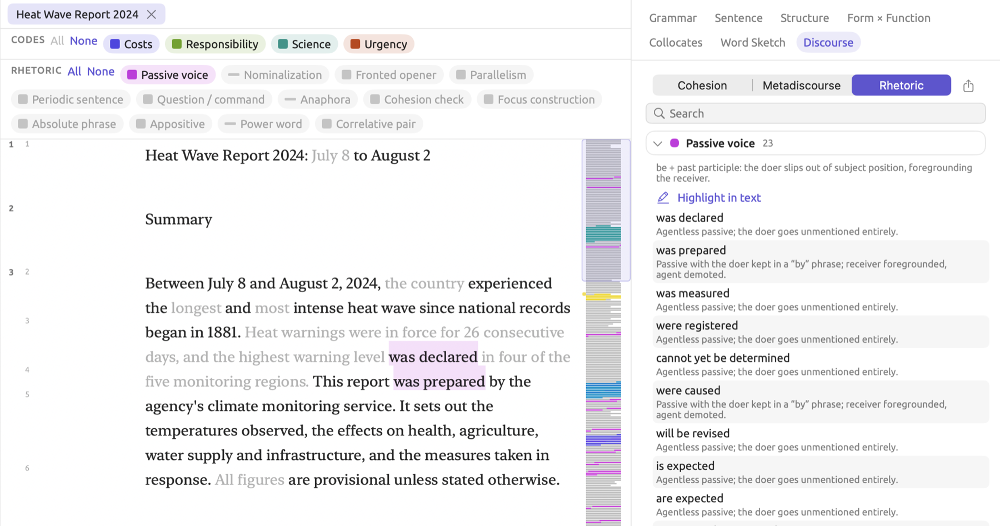
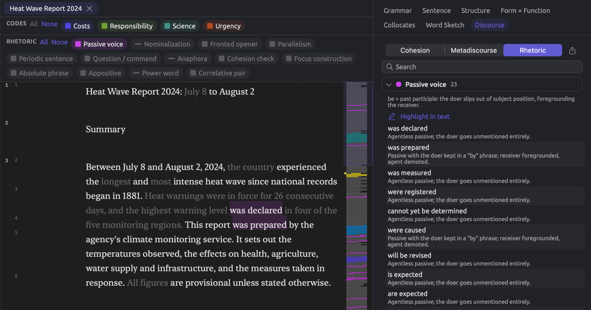
You can use the lens’ legend to see which of its lenslets are disabled (see Choosing which aspects are enabled in Chapter 6, Lenses). To see the annotated sentences consecutively, collapse the document too, with the button whose tooltip reads Show only the sentences a lens annotates (see Showing only annotated sentences in Chapter 6, Lenses).
Exporting the findings
There is an export button at the far right end of the section buttons that allows you to save the current section as a CSV file. This file stores all findings of all categories in that section regardless of what you search for or the 200 limit. The suggested filename of this CSV file is the name of the document with the section appended onto the end, e.g., Heat Wave Report 2024-Rhetoric.
This CSV file has four columns, which are Category, Sentence (the number of the sentence in the document), Text, and Detail. The contents of the latter two depend upon the section itself:
| Section | Text | Detail |
|---|---|---|
| Cohesion | The sentence | The line below it, such as Known: repeats “climate” |
| Metadiscourse | The word found | The sentence |
| Rhetoric | The words found | The note |